Istanbul is where the kebab traditions of Anatolia, the Levant, and the Balkans collide — and the result is one of the world's greatest meat-eating cities. From the paper-thin slices of döner to the fiery spice of Adana kebab, from horizontal cağ kebab rotisseries to butter-drenched İskender, the variety is staggering.
We analyzed hundreds of Reddit posts from r/istanbul, r/Turkey, r/travel, and r/foodtravel to find the spots that actual Istanbul residents and seasoned travelers recommend over and over. Skip the tourist-trap restaurants on İstiklal with touts outside — these are the kebabs worth crossing the Bosphorus for.
📊 How we built this list
We analyzed 200+ Reddit posts and 1,500+ comments across r/istanbul, r/Turkey, r/Turkiye, r/travel, and r/foodtravel — spanning 2019 to 2025. Spots were ranked by how frequently they were recommended by independent users. Every spot on this list was mentioned in at least 3 separate threads by different people. We weighted Istanbul locals' picks more heavily than first-time tourist posts.

What to order: The cağ kebab — horizontal-spit lamb carved in thick slices, served with lavash bread and grilled peppers. It's closer to what döner was originally before it became the thin-sliced fast food we know today.
"Just ate the best doner I have ever tasted — Sehzade Cag Kebap. Anything same but cheaper?"
— r/istanbul · posted July 2016
"You should know that what you ate was not called doner. It is called cağ kebap (which is horizontal) and the slices of meat are much much thicker than doner. But you are right, they are very similar."
— r/istanbul · reply
tabiji verdict: The most iconic cağ kebab in Istanbul. The horizontal rotisserie produces thick, juicy lamb slices that blow standard döner out of the water. It's in the touristy Sirkeci area but the quality is legit — locals eat here too. A must-try that's unlike any kebab you've had back home.
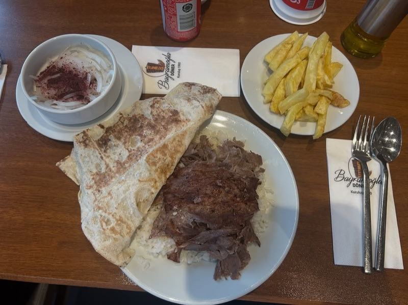
What to order: The classic döner porsiyon (plate) — thinly sliced lamb döner with rice, salad, and bread. Or go for the dürüm (wrap) if you want it handheld. The meat quality speaks for itself.
"The most famous döner restaurant is Bayramoğlu Döner in Beykoz and it has decent prices. You must try it if you want to eat real döner."
— r/istanbul · Good Turkish restaurants thread, 2023
tabiji verdict: Worth the trek to the Asian side. Bayramoğlu has been serving döner for over 30 years and is consistently cited as Istanbul's best. The lamb is high quality, the portions are generous, and the prices haven't gone insane despite the fame. This is pilgrimage-tier döner.
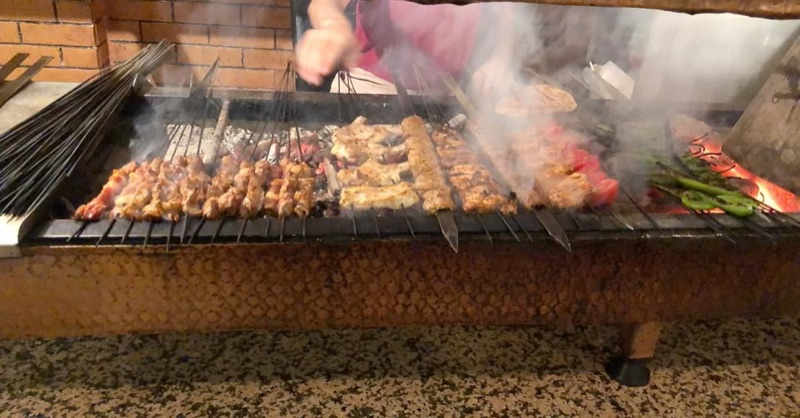
What to order: Start with gavurdağı salatası and közde patlıcan (grilled eggplant). Then go for the Adana kebab or lamb chops (pirzola). Finish with künefe if they have it.
tabiji verdict: The best introduction to ocakbaşı (charcoal grill) dining for visitors. It's near İstiklal but not a tourist trap — locals eat here regularly. The mezes are excellent and the kebabs are grilled right in front of you. Great for a proper sit-down kebab feast.
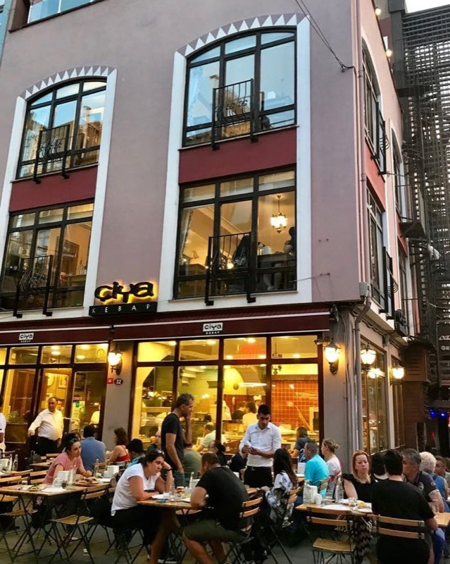
What to order: The Kilis kebab, Adana kebab, or whatever regional specialty is on the daily menu. Also try the içli köfte (stuffed meatballs) and any of the unusual Anatolian dishes you won't find elsewhere.
tabiji verdict: A pilgrimage point for food lovers. Chef Musa Dağdeviren has been featured on Netflix's Chef's Table and is obsessed with preserving disappearing Anatolian recipes. Not just kebabs — this is a culinary museum of Turkish food. Go to Çiya Sofrası (the one across the street), not Çiya Kebap.
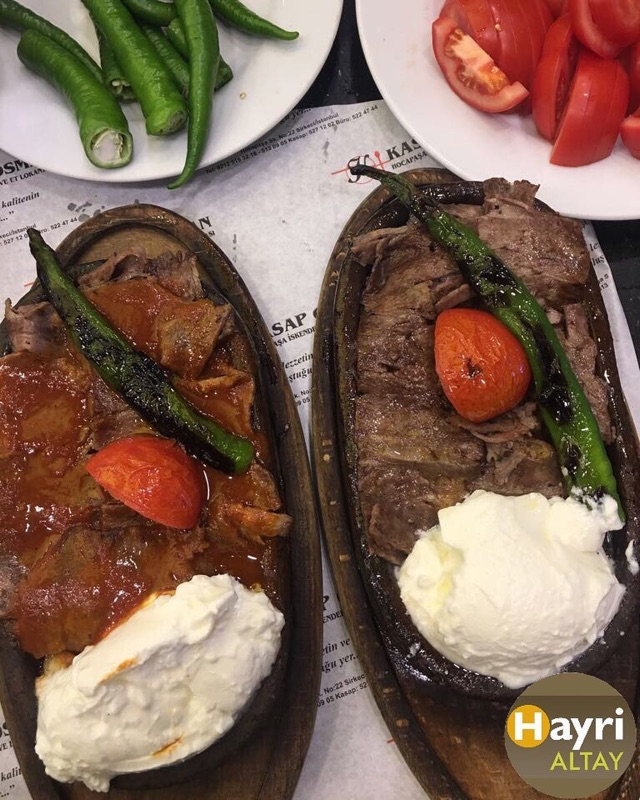
What to order: The döner dürüm (wrap) — the meat is sliced impossibly thin and piled into warm lavash. Simple, perfect, and cheap. Also good as a plate with rice.
tabiji verdict: On the same Sirkeci street as Şehzade Cağ Kebabı — you can easily hit both in one trip. Kasap Osman is pure döner done right. No frills, no pretension, just incredibly thin-sliced meat. A local lunch staple.
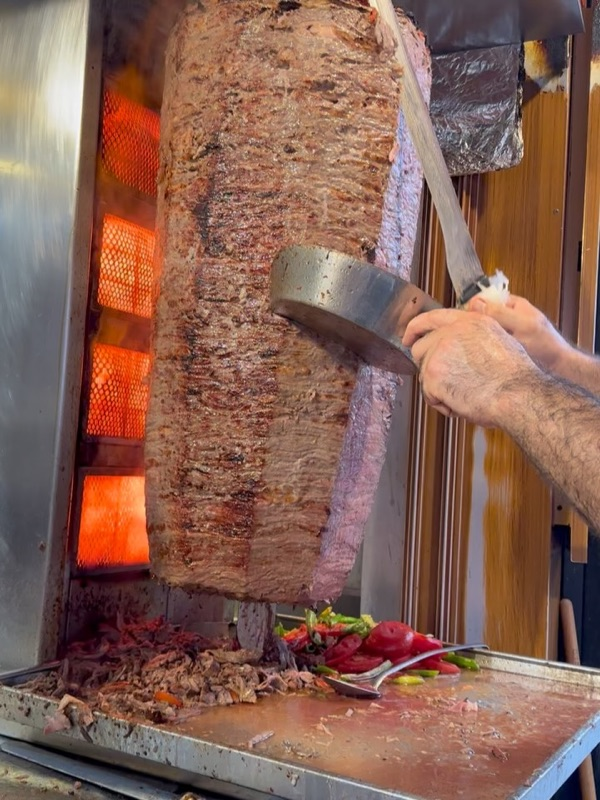
What to order: The tombik döner (döner in a soft, pillowy bread) or the classic dürüm. Both are excellent. The tomato-based sauce on the tombik is addictive.
tabiji verdict: The Beşiktaş institution. Always packed with locals at lunchtime, which tells you everything. The tombik (soft bread) döner is their signature — puffy bread soaking up meat juices. Quick, cheap, and insanely satisfying. Near the Beşiktaş ferry terminal, so easy to combine with sightseeing.
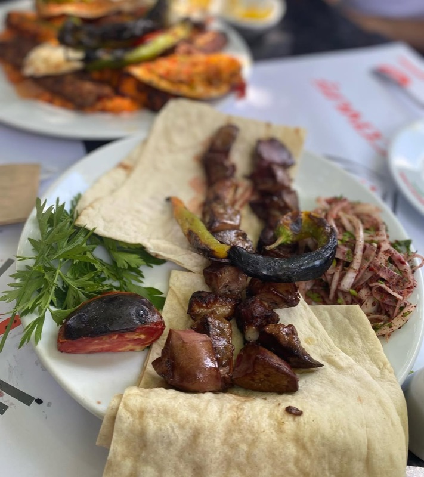
What to order: The Adana kebab — hand-minced spicy lamb on a flat skewer, grilled over charcoal. Get it with a side of grilled peppers, onion salad with sumac, and warm lavash bread.
tabiji verdict: Hidden in the Dolapdere neighborhood — not somewhere tourists wander — which is exactly why the kebab is so good and so cheap. This is the real deal: smoky charcoal-grilled Adana kebab in a no-nonsense setting. A genuine local secret.
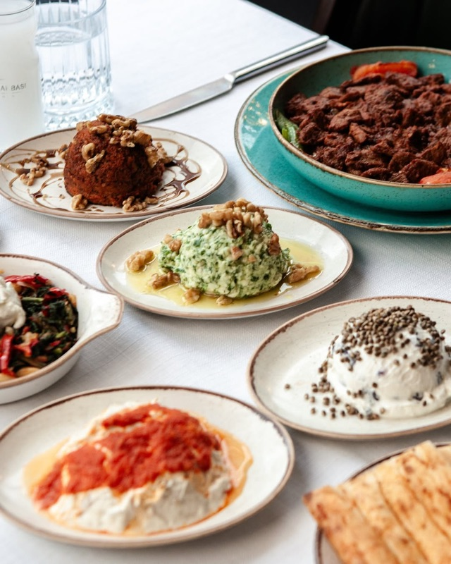
What to order: The Adana kebab platter — spicy hand-minced lamb with all the fixings. Also try the Urfa kebab (same preparation, no spice) if you prefer milder flavors. Their beyti kebab (wrapped in lavash with yogurt sauce) is also excellent.
tabiji verdict: Exactly what it says on the tin — Adana-style kebab cooked over an open charcoal grill. Multiple locations around the city make it accessible. Consistent quality and a reliable choice when you want proper Southeast Turkish kebab without hunting for a hidden gem.
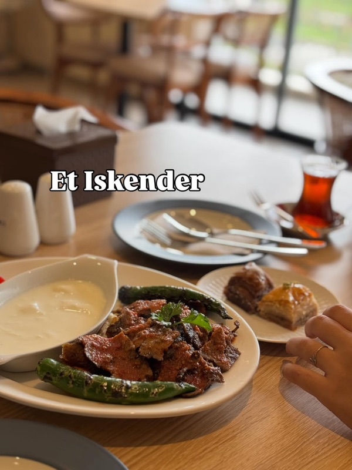
What to order: The İskender kebab — thinly sliced döner meat over pide bread, drenched in tomato sauce, melted butter, and served with thick yogurt. Ask for extra butter (they bring a sizzling ladle of it to your table).
tabiji verdict: İskender kebab is originally from Bursa, and purists say you should eat it there. But if you're staying in Istanbul, İskender 1867 is the most authentic version in the city. The sizzling butter ladled over the meat at your table is theatrical and delicious.
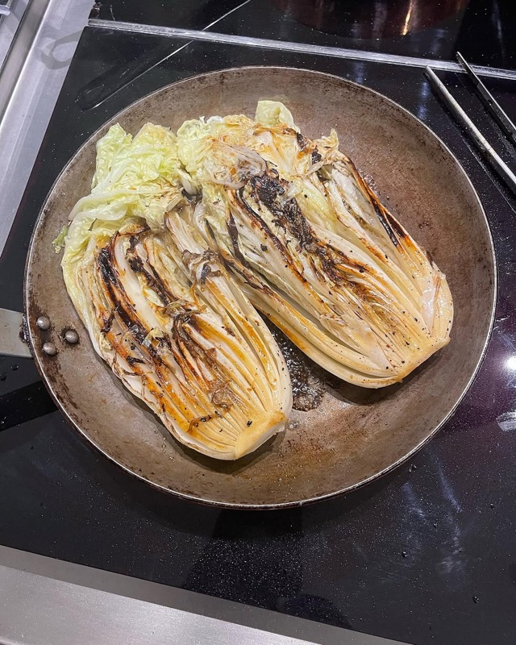
What to order: The döner porsiyon or dürüm. Tatar Salim is known for high-quality, properly seasoned lamb döner that's a cut above the average street döner.
tabiji verdict: The Kadıköy döner champion. Combine with a visit to Çiya Sofrası and Halil Lahmacun (both nearby) for the ultimate Kadıköy food crawl. Tatar Salim consistently beats more famous names in blind taste tests among locals.
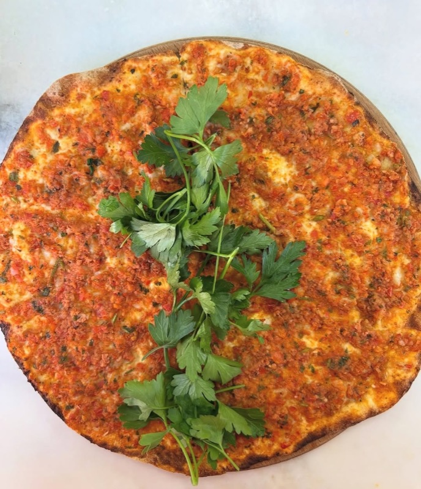
What to order: The lahmacun — paper-thin crispy flatbread topped with spiced minced lamb, herbs, and tomato. Squeeze lemon on it, add parsley and onion, roll it up, and eat. Also try the pide (Turkish pizza boat).
tabiji verdict: Istanbul's most famous lahmacun. Cash only, always busy, and the lahmacun is impossibly thin and crispy. At ₺60–₺80 per piece, this is the cheapest great meal on this entire list. Grab 2–3, roll them up with greens, and you've had one of Istanbul's defining food experiences.
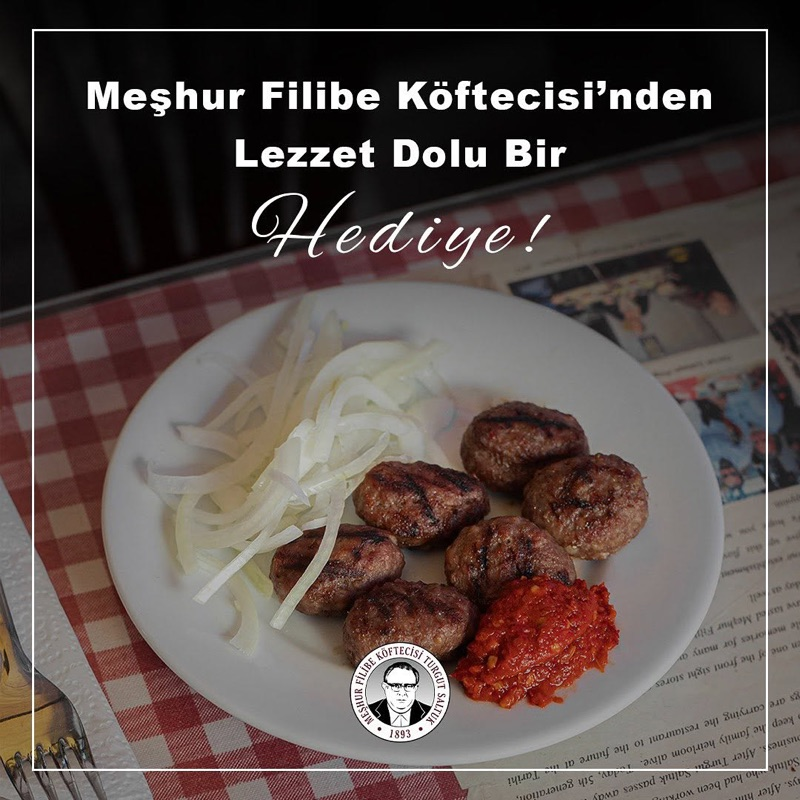
What to order: The köfte (grilled meatballs) — they only do one thing and they do it perfectly. Served with white beans (piyaz), bread, and raw onion. That's it. That's the menu.
tabiji verdict: One-menu restaurants in Turkey are almost always excellent, and Filibe is no exception. The köfte are charcoal-grilled, perfectly seasoned, and served with the classic white bean salad. Near the Sultanahmet area, so easy to visit while sightseeing. Don't let the simplicity fool you — this is mastery.
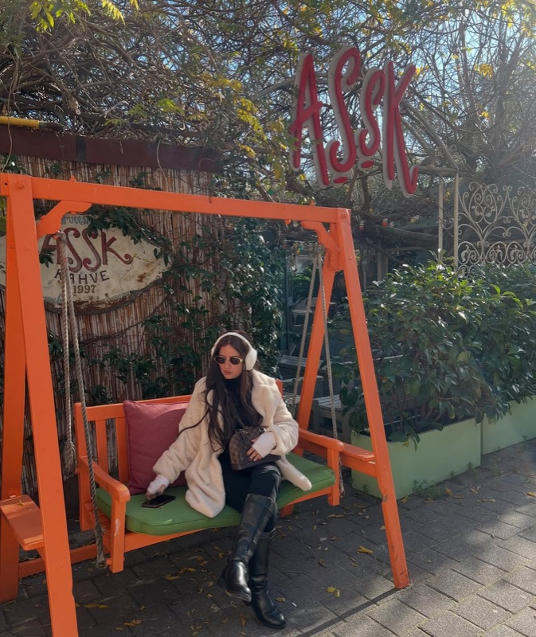
What to order: The tandır kebab (slow-cooked lamb) or their premium Adana. The meat display at the entrance lets you pick your cut. Mezes are top-tier too — try the haydari and acılı ezme.
tabiji verdict: The upscale kebab experience. Günaydın is a chain, but the standalone restaurants (NOT the mall food court versions) are genuinely excellent. Think premium cuts, butcher-shop presentation, and a full meze spread. Pricier than street kebab but worth it for a special meal.
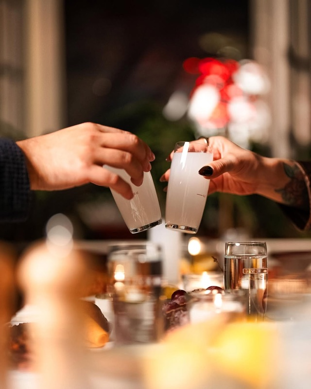
What to order: The Adana kebab or the mixed grill plate. Yirmibir does proper Southeast Turkish-style grilled kebabs. The acılı (spicy) version has real heat.
tabiji verdict: A solid Adana kebab option right in the Taksim area — convenient for tourists staying on the European side. Not the absolute best kebab in Istanbul, but reliably good and well-located. Perfect for a quick kebab fix between sightseeing.
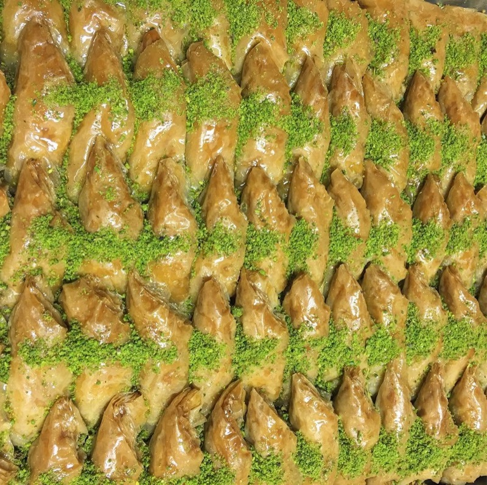
What to order: The kuşbaşılı pide (diced lamb pide) or kıymalı pide (minced meat). Pide is like Turkish pizza — boat-shaped flatbread with various toppings baked in a wood-fired oven. Also try the kaşarlı (cheese) version.
tabiji verdict: Pide is the unsung hero of Turkish cuisine — like a more substantial, more satisfying version of pizza. Nizam Usta has been baking pide in Taksim for decades. The lamb versions are essentially kebab-in-bread and are outrageously good.
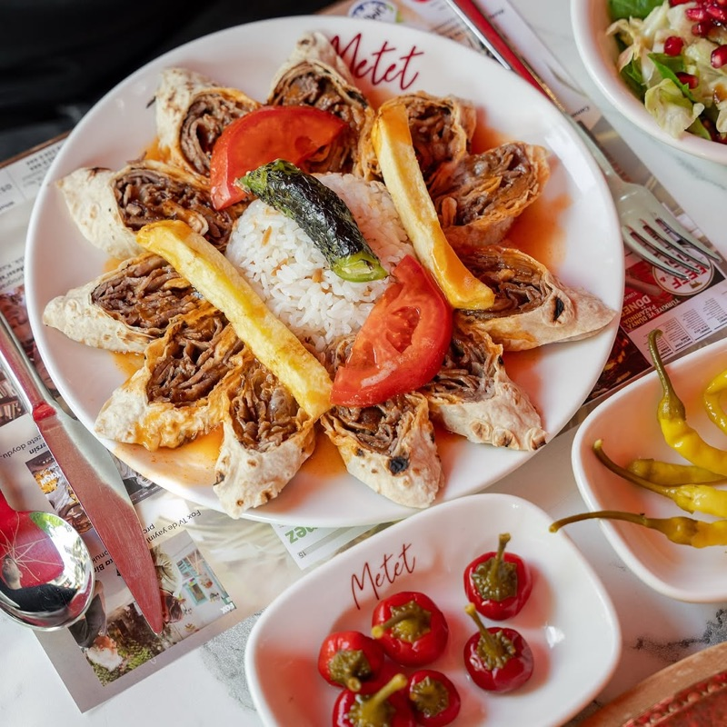
What to order: The közde döner — döner cooked over charcoal embers rather than gas, which gives it a smokier, more complex flavor. Get it as a dürüm or plate.
tabiji verdict: The "közde" (ember-cooked) distinction matters — most döner in Istanbul is cooked over gas burners, but Metet uses traditional charcoal. The smoky flavor difference is noticeable and makes this worth seeking out. A solid mid-tier option for döner enthusiasts.
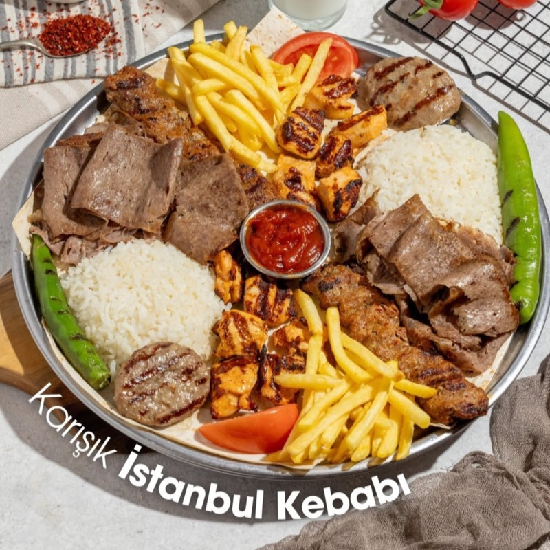
What to order: The Bursa kebabı (their take on İskender) — döner over pide bread with rich tomato sauce, brown butter, and yogurt. Ask for it "bol yoğurtlu" (extra yogurt).
"Bursa Kebap Evi — there are two authentic ones in Istanbul; one in Kadıköy, close to the pier; and one in Nişantaşı."
— r/Turkiye · İskender kebab thread, 2023
tabiji verdict: If İskender 1867 is the posh option, Bursa Kebap Evi is the hearty, hometown version. They call it "Bursa kebabı" rather than İskender (the name is trademarked in Turkey). Same concept, generous portions, and arguably better value.
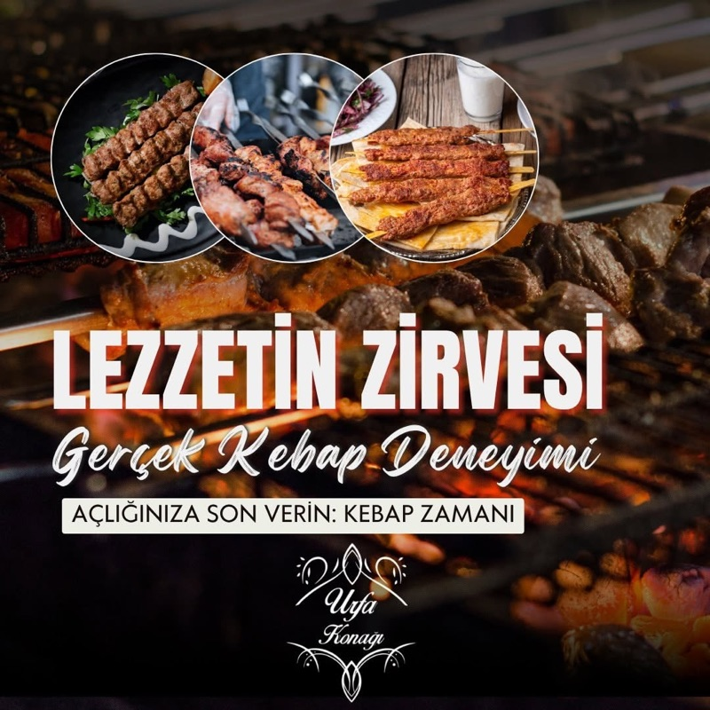
What to order: The Adana kebab — hand-minced spicy lamb grilled to perfection. Also try the patlıcan kebab (lamb with grilled eggplant) for variety.
tabiji verdict: A neighborhood institution in Osmanbey — slightly off the main tourist trail but easily reachable by metro. Locals have been eating here for years, which is always the best endorsement. The Adana kebab is fiery, fatty, and fantastic.
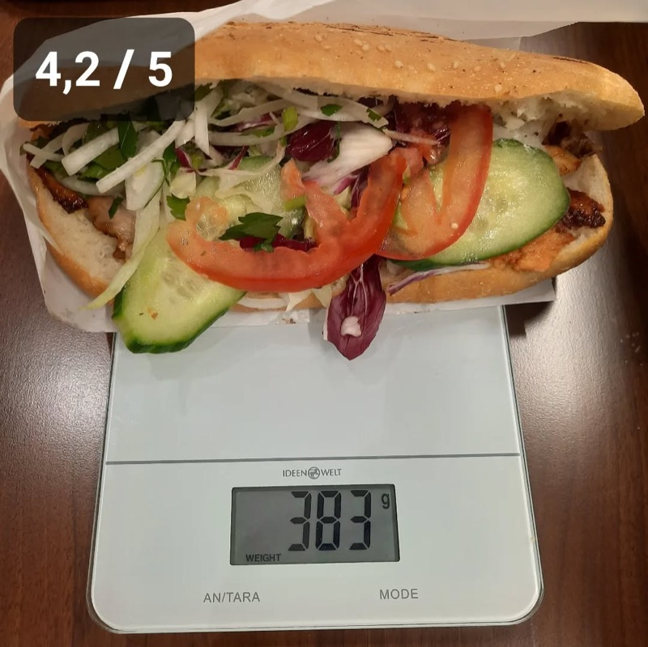
What to order: The döner dürüm — classic Beşiktaş-style döner wrap. Simple and satisfying. The meat is properly marinated and the bread is always fresh.
tabiji verdict: Beşiktaş is Istanbul's döner capital, and Kasap Döner is one of the reasons why. Unpretentious, fast, and delicious. If you're in the area visiting Dolmabahçe Palace or the Beşiktaş market, this is your lunch sorted.
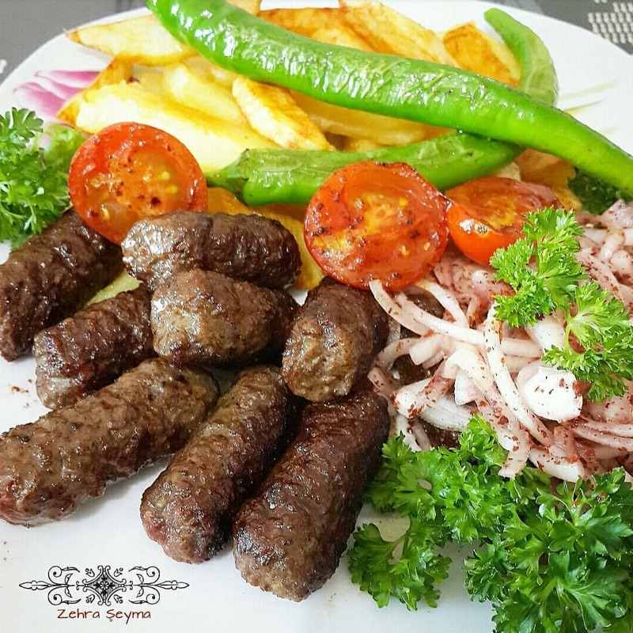
What to order: The İnegöl köfte — softer, juicier meatballs than standard köfte, made without breadcrumbs, just meat and onion. Served with fresh bread and raw onion. Cash only.
tabiji verdict: İnegöl köfte is a distinct style — softer, simpler, with just meat and onion. No filler, no breadcrumbs. Ekspress does it perfectly and charges almost nothing. Cash only, no frills, just honest food. A perfect end to a Kadıköy food crawl.
Frequently Asked Questions
What is the best kebab in Istanbul?
Based on Reddit consensus, Şehzade Erzurum Cağ Kebabı in Sirkeci is one of the most praised spots for its unique horizontal-spit cağ kebab. For döner, Bayramoğlu in Beykoz and Tatar Salim in Kadıköy are top picks. For a full sit-down kebab feast with mezes, Zübeyir Ocakbaşı in Beyoğlu is the go-to. It depends on which type of kebab you're after — Istanbul excels at all of them.
How much do kebabs cost in Istanbul?
A döner dürüm (wrap) costs ₺80–₺150 ($2.50–$5 USD). A sit-down kebab plate with sides runs ₺150–₺400 ($5–$13 USD). Upscale spots like Günaydın can reach ₺500–₺800+ per person. Street-side lahmacun is ₺50–₺80. Istanbul offers incredible value for the quality of meat and preparation — you can eat extraordinarily well for very little.
What types of kebab should I try in Istanbul?
Istanbul offers staggering variety: Adana kebab (spicy hand-minced lamb on a flat skewer), İskender (döner over pide bread with tomato sauce and butter), cağ kebab (horizontal rotisserie lamb from Erzurum — thicker slices than döner), döner (vertical spit-roasted meat), and şiş kebab (grilled cubes of marinated meat). Don't miss lahmacun (paper-thin meat flatbread), pide (boat-shaped flatbread), and köfte (grilled meatballs).
Should I eat kebabs in the tourist areas of Istanbul?
Generally, avoid restaurants directly on Sultanahmet Square and İstiklal Avenue that have aggressive touts standing outside. These tend to be overpriced with mediocre quality. Walk a few blocks into neighborhoods like Sirkeci, Fatih, Kadıköy, or Beşiktaş where locals eat. The quality difference is dramatic and the prices are often half. Notable exception: Şehzade Cağ Kebabı in Sirkeci is in a touristy area but still excellent.
Is İskender kebab worth trying in Istanbul?
İskender kebab originated in Bursa, about 2 hours from Istanbul, so purists say you should eat it there. However, İskender 1867 in Beşiktaş and Bursa Kebap Evi serve excellent versions in Istanbul. Reddit locals note it's good but not the definitive Istanbul experience — focus on döner, cağ kebab, and Adana kebab, which Istanbul does exceptionally well.
When is the best time to eat kebabs in Istanbul?
Lunch (12:00–2:00 PM) is prime kebab time — most locals eat their big meat meal midday. Many popular döner spots sell out by early afternoon, especially Bayramoğlu and Kasap Osman. For ocakbaşı (grill restaurants) like Zübeyir, dinner service (7:00–10:00 PM) is the main event. Avoid eating kebab too late — quality drops when meat has been sitting on the spit for hours.